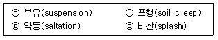
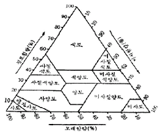
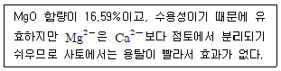

농림토양평가관리산업기사 (2004-12-12 기출문제)
1과목: 토양학
1. 염류과다 토양에서 염류장해를 제거하는 방법 중 적당하지 못한 것은?
- 객토하기
- 물대주기
- 석회시용
- 흡비력이 강한 작물 재배
(정답률: 알수없음)

2. 토양의 유기물 함량이 같을 때, 일반적으로 토양의 유효수분 함량이 가장 많은 토성은?
- 점토 함량 10%인 사양토
- 점토 함량 20%인 양토
- 점토 함량 30%인 식양토
- 점토 함량 50%인 식토
(정답률: 알수없음)
3. 알칼리 가용부인 부식산 물질 중에서 산 가용부인 성분은 다음 중 어느 것인가?
- 부식탄(humin)
- 휴민산(humin acid)
- 히마토멜란산(hymatomelanic acid)
- 플브산(fulvic acid)
(정답률: 알수없음)
4. 토양 중 황의 동태에 대하여 잘못 설명한 것은?
- pH 6.0 이하인 산성에서 SO42-의 흡착이 일어난다.
- 수용성 황산염의 전체 황에 대한 비율은 활성철과 알루미늄의 함량증가에 따라서 높아진다.
- 환원 상태의 S가 공기를 만나면 산화하여 pH가 급격히 낮아진다.
- pH가 낮아지면 수용성 황산염의 비율이 낮아진다.
(정답률: 알수없음)
5. 다음 중 토양의 주요 역할로 볼 수 없는 것은?
- 기계적으로 식물을지지
- 수분과 양분을 저장하여 공급
- 광합성작용에 필요한 탄산가스의 공급
- 미생물의 생육과 유기물 분해장소
(정답률: 알수없음)
6. 토양의 풍식에 대한 대책으로 적당하지 않은 방법은?
- 방풍림 조성
- 피복작물 재배
- 토양진압
- 등고선 재배법
(정답률: 알수없음)
7. 다음 중에서 공중질소를 고정하는 균은?
- 근류균
- 암모니아화성균
- 질산균
- 아질산균
(정답률: 알수없음)
8. 식물체 구성성분 중 토양에서 분해가 가장 어려운 것은?
- 단백질
- 탄수화물
- 전분
- 리그닌
(정답률: 알수없음)
9. 다음 암석 중 풍화에 대한 안정성이 가장 낮은 것은?
- 운모
- 석영
- 백운석
- 감람석
(정답률: 알수없음)
10. 우리 나라에서 토양유실예측공식을 적용하기 위한 강수인자가 400인 지역에서 토양인자가 0.25, 경사인자가 1.0인 상태에서 옥수수(작물관리인자:0.4)를 등고선(토양보전관리인자:0.6) 재배하면, 1 ha의 경사지 밭에서 연간토양유실량은 어느 정도로 예측되는가?
- 10 ～ 15톤
- 20 ～ 40톤
- 45 ～ 60톤
- 65톤 이상
(정답률: 알수없음)
11. 우리나라에서 가장 많이 분포하고 있는 토양목은?
- Entisols
- Ultisols
- Alfisols
- Inceptisols
(정답률: 알수없음)
12. 바람에 의한 침식(wind erosion)에서 토양 입자의 이동방법을 모두 나열한 것은?

- ㉠
- ㉠, ㉡
- ㉠, ㉡, ㉢
- ㉠, ㉡, ㉢, ㉣
(정답률: 알수없음)
13. 양이온 치환용량이 20 cmolc/kg 이고 치환성염기가 5 cmolc/kg 일 때 염기포화율은 얼마인가?
- 20%
- 25%
- 50%
- 75%
(정답률: 알수없음)
14. 다음 점토광물 중에서 입경이 100mesh일 때 양이온치환용량이 가장 큰 것은?
- 백운모
- montmorillonite
- kaolinite
- 흑운모
(정답률: 알수없음)
15. 일반적으로 토양미생물 중 토양의 산도와 상관없이 생육이 가장 양호한 미생물은?
- 방사상균
- 사상균
- 세균
- 아조토박터
(정답률: 알수없음)
16. 토양의 용적밀도가 1.8 g/cm3일 때 75 cm3 용적에 들어있는 건조토양의 무게는?
- 0.024g
- 135g
- 42g
- 36g
(정답률: 알수없음)
17. 다음의 이온 중 Sodic 현상을 일으키는 주요 이온은?
- 칼륨
- 나트륨
- 칼슘
- 마그네슘
(정답률: 알수없음)
18. 토양통(series)에 관한 다음 설명 중 맞지 않는 것은?
- 같은 통의 토양은 대개 모재가 같음
- 같은 통의 토양은 층위의 배열이나 이용이 비슷함
- 통은 속(family)보다 상급 분류단위임
- 대개 처음 발견된 지명을 사용하여 명명함
(정답률: 알수없음)
19. 매년 유기물 시용으로 땅이 푸슬푸슬하게 되었다. 다음 중 유기물 시용을 통해 변하지 않는 토양의 성질은?
- 보수성과 통기성
- 공극량
- 토성
- 유기물함량
(정답률: 알수없음)
20. 어떤 토양의 모래:미사:점토 함량의 상대적 비율이 15%:70%:15% 일 때 미국 농무성법에 따르면 이 토양의 토성은 무엇인가?

- 식양토
- 미사질식양토
- 미사질양토
- 양토
(정답률: 알수없음)
2과목: 비료학
21. 일반적으로 비료 3요소 시험을 위한 5개 시험구 설치에 해당되는 것은?
- 삼요소구 - 질소구 - 인산구 - 칼리구 - 무비료구
- 삼요소구 - 질소구 - 인산구 - 칼리구 - 퇴비구
- 무비료구 - 무질소구 - 무인산구 - 무칼리구 - 삼요소구
- 무비료구 - 무질소구 - 무인산구 - 무칼리구 - 퇴비구
(정답률: 알수없음)
22. 인산질 비료의 비효증진책으로 옳지 않은 것은?
- 토양을 담수처리한다.
- 작물의 뿌리주위에 시비한다.
- 부식의 증가를 꾀한다.
- 분상(粉狀)의 인산질비료를 시용한다.
(정답률: 알수없음)
23. 비료 성분이 서서히 녹아 나와 작물이 이용하는 비료를 완효성 비료라 한다. 다음 중 완효성 비료가 아닌 것은?
- 피복요소 복합비료
- CDU 복합비료
- IBDU 복합비료
- 황산암모늄
(정답률: 알수없음)
24. 다음의 마그네슘질 비료의 설명에 해당하는 것은?

- 황산마그네슘
- 수산화마그네슘
- 탄산마그네슘
- 고토석회
(정답률: 알수없음)
25. 비료의 반응별 분류 중 화학적 산성비료이며, 생리적 중성비료는?
- 과인산석회
- 황산암모늄
- 용성인비
- 황산칼륨
(정답률: 알수없음)
26. 비료의 시험방법 중 토양을 사용하여 실제와 똑같은 조건으로 시험하는 방법은?
- 사경법
- 수경법
- 토경법
- 심경법
(정답률: 알수없음)
27. 인산의 비료 형태 중 염기성으로 토머스(Thomas)인비의 주성분은?
- 인산1칼슘
- 인산2칼슘
- 인산3칼슘
- 인산4칼슘
(정답률: 알수없음)
28. 완효성 질소질비료에 대한 설명으로 맞지 않는 것은?
- 물에는 녹기 어려우나 토양미생물 또는 화학적으로 분해되어 유효질소로 변화하는 물질
- 물에는 녹기 어려우나 질소는 식물에 직접 흡수되는 형태의 물질
- 물에는 잘 녹으나 식물에 흡수되지 아니하는 형태의 물질
- 물에는 잘 녹으나 토양중에서 느리게 분해되어 유효한 형태로 되는 물질
(정답률: 알수없음)
29. 다음 중 화학적 반응은 중성비료이지만 생리적 산성비료는?
- 염화암모늄
- 요소
- 석회질소
- 중과인산석회
(정답률: 알수없음)
30. 다음 중 토양 내 미량원소인 철(Fe)에 대한 설명으로 틀린 것은?
- 철결핍은 식물체의 뿌리쪽에서부터 나타나기 시작한다.
- Fe와 경쟁작용을 하는 양이온들인 Mn2+ Cu2+, Ca2+, Mg2+ 등 때문에 Fe 결핍증이 유발되기도 한다.
- 토양용액의 pH가 높고 인산염과 Ca2+의 농도가 높으면 Fe의 흡수는 저하된다.
- 철의 흡수는 Mn2+, Cu2+ 등 양이온에 의하여 경쟁작용을 한다.
(정답률: 알수없음)
31. 철의 흡수와 식물체내에서 전류에 기본적인 역할을 하며 결핍되면 엽맥과 엽맥사이가 황색으로 변하거나 황색반점이 나타나고, 산성토양에서 결핍증상이 잘 나타나는 미량 요소는?
- 구리(Cu)
- 아연(Zn)
- 붕소(B)
- 몰리브덴(Mo)
(정답률: 알수없음)
32. 토양 질소의 중요한 변동 과정중 화학적 반응 및 현상에 의한 것이 아닌 것은?
- 암모니아화작용
- 용탈작용
- 질산화작용
- 탈질작용
(정답률: 알수없음)
33. 과수원에 1% 요소 엽면시비를 하려고 하는데, 물 2L에 필요한 요소의 양은 얼마인가?
- 10g
- 15g
- 20g
- 25g
(정답률: 알수없음)
34. 다음 중 비료의 중량 계산 방법이 맞는 것은?
- 비료의 중량 = 성분량 × [보증성분량(%)/100]
- 비료의 중량 = 성분량 × [100/보증성분량(%)]
- 비료의 중량 = (100-성분량) × [성분량/보증성분량(%)]
- 비료의 중량 = 보증성분량(%) × [100/성분량]
(정답률: 알수없음)
35. 처리에 제약이 없고 처리당 반복수가 같지 않아도 무방한 시험구 배치방법은?
- 완전임의 배치법
- 난괴법
- 라틴방격법
- 분할구 배치법
(정답률: 알수없음)
36. 다음 중 식물에 의한 양분 요구량이 가장 높고, 수량에 결정적인 영향을 미치는 것은?
- 질소
- 인산
- 칼륨
- 마그네슘
(정답률: 알수없음)
37. 식물의 생산량은 그 생육에 필요한 여러 인자(양분, 수분, 온도, 광선 등) 중 공급비율이 가장 적은 인자에 지배된다고 하는 이론과 이 때의 가장 적은 인자는?
- 최소양분율 - 공통인자
- 최소율 - 제한인자
- Wolff의 법칙 - 환경인자
- 보수점감의 법칙 - 환경인자
(정답률: 알수없음)
38. 화성비료는 우리나라 비료 공정 규격상 다음 어디에 해당되는가?
- 제1종 복합비료
- 제2종 복합비료
- 제3종 복합비료
- 제4종 복합비료
(정답률: 알수없음)
39. 식물체가 가장 빨리 흡수 할 수 있는 비료의 형태는?
- 분상비료
- 입상비료
- 괴상비료
- 액상비료
(정답률: 알수없음)
40. 10%의 가용성인산을 함유하는 보통 과인산석회와 20%의 가용성인산을 함유하는 중과인산석회를 혼합하여 가용성인산 18%를 함유하는 비료 100kg을 얻고자 할 때 과인산석회와 중과인산석회 각각의 혼합량은?
- 과인산석회 30kg과 중과인산석회 70kg
- 과인산석회 40kg과 중과인산석회 60kg
- 과인산석회 50kg과 중과인산석회 50kg
- 과인산석회 20kg과 중과인산석회 80kg
(정답률: 알수없음)
3과목: 재배학원론
41. 육묘가 필요한 이유와 관련이 적은 것은?
- 종자의 절약
- 노력절감
- 직파가 불리한 경우
- 추대촉진
(정답률: 알수없음)
42. 녹체버어널리제이션(green plant vernalization)의 저온처리시 감응부위는?
- 잎
- 줄기
- 뿌리
- 생장점
(정답률: 알수없음)
43. 논두렁에 콩을 심어 재배하는 작부 체계는?
- 간작
- 주위작
- 점혼작
- 교호작
(정답률: 알수없음)
44. 다음 중 방사성동위원소의 재배적 이용과 가장 거리가 먼 것은?
- 작물의 영양생리 연구
- 광합성의 연구
- 영양기관의 장기저장
- 돌연변이의 유발
(정답률: 알수없음)
45. 벼나 보리의 채종 재배시 이형주를 도태시키는데 가장 적당한 시기는?
- 출수개화기
- 감수분열기
- 유수형성기
- 유효분얼기
(정답률: 알수없음)
46. 다음 중 작부체계 중 혼파의 가장 큰 효율적 잇점은?
- 채종상 유리함
- 병해충 방제상 유리함
- 재배관리의 유리함
- 비료성분의 효율적 이용
(정답률: 알수없음)
47. 내건성이 강한 작물의 형태적 특성이 아닌 것은?
- 잎맥(葉脈)과 울타리조직(柵狀組織)이 발달한다.
- 표면적/체적의 비(比)가 작다.
- 지상부에 비해 근군(根群)의 발달이 좋다.
- 잎의 두께가 얇다.
(정답률: 알수없음)
48. 내냉성 설명으로 알맞은 것은?
- 동해와 냉해는 같은 의미이다.
- 하작물에서 내냉성이 문제가 된다.
- 냉해증상은 세포내 결빙이 생긴다.
- 냉해는 저온장해와는 다르다.
(정답률: 알수없음)
49. 맥류 세조파(細條播)재배의 잇점은?
- 파종량이 적게 든다.
- 시비량이 적게 든다.
- 노력이 적게 든다.
- 경제성이 떨어진다.
(정답률: 알수없음)
50. 기상생태형(氣象生態型)을 구성하는 성질이 아닌 것은?
- 굴광성
- 감광성
- 감온성
- 기본영양생장성
(정답률: 알수없음)
51. 화본과 목초의 발아촉진제로 사용하는 것은 다음 중 어느 것인가?
- 에틸렌
- 티오요소
- 질산염
- 사이토카이닌
(정답률: 알수없음)
52. 재배식물이 그 선조인 야생식물에 비해 환경적응성이 약하다고 하는데, 그 원인으로 가장 적당한 것은?
- 병 저항성 유전자의 축적
- 환경적응성 관련 유전자의 소실
- 유전자의 상호작용
- 유전자의 재조합
(정답률: 알수없음)
53. 인공적으로 영양번식을 하는데 있어 발근 및 활착을 촉진하는 처리가 있는데, 그 방법이 아닌 것은?
- 황화
- B-9 처리
- 환상박피
- 생장호르몬처리
(정답률: 알수없음)
54. 다음 중 증발억제제로 사용하는 약제는?
- ABA액
- CCC액
- OED 유액
- AED 유액
(정답률: 알수없음)
55. 각국의 도시 근교에서 주로 행해지고 있는 재배 형식은?
- 포경
- 곡경
- 식경
- 원경
(정답률: 알수없음)
56. 토양 수분을 측정하는 방법이 아닌 것은?
- 장력계법
- 전기저항법
- 가압상법
- 중성자 산란법
(정답률: 알수없음)
57. 토양 수분의 형태 중 작물이 주로 이용하는 수분은?
- 결합수
- 흡수수
- 모관수
- 중력수
(정답률: 알수없음)
58. 엽록소 형성에 가장 효과적인 광은?
- 청색광(430~490㎚)
- 황색광(550~580㎚)
- 자색광(390~420㎚)
- 주황색광(590~620㎚)
(정답률: 알수없음)
59. 도복저항성에 관한 설명으로 옳은 것은?
- 도복지수가 높은 품종이 도복저항성이 높다.
- 좌절중을 작게 하면 도복저항성이 높아진다.
- 일반적으로 단간종, 수수형 품종은 도복저항성이 높다.
- 간장, 수중이 커지면 도복지수가 낮아진다.
(정답률: 알수없음)
60. 작물의 자연 분화과정에 속하지 않는 것은?
- 도태
- 적응
- 환경적 변이
- 지리적 격리
(정답률: 알수없음)
4과목: 분석화학기초
61. 침전적정에서 종말점을 검출하는데 사용되는 방법이 아닌 것은?
- 전위차법
- 지시약법
- 빛 산란법
- 적외선분광법
(정답률: 알수없음)
62. 다음 중 화학반응의 속도에 영향을 미치는 것으로 가장 부적당한 것은?
- 반응계의 온도의 변화
- 촉매의 유무
- 반응물질의 농도의 변화
- 반응계의 부피의 변화
(정답률: 알수없음)
63. 다음 표현 가운데 결과의 재현성과 신뢰도를 나타내는 것은?
- 정확도
- 정밀도
- 표준오차
- 정성도
(정답률: 알수없음)
64. 부피분석에서는 분석물질과 반응하는데 필요한 시약의 부피를 적정을 통하여 측정한다. 이 부피분석을 준비하는 과정을 설명한 것으로 가장 옳은 것은?
- 표준용액은 항시 일차표준물질을 녹인 용액으로 사용한다.
- 종말점과 당량점의 차이는 피할 수 있는 적정오차(titration error)이다.
- 역적정의 종말점이 직접 적정의 종말점 보다 선명할 때는 역적정이 더 유용하다.
- 부피분석에서 실제 측정하는 것은 종말점이 아니고 당량점이다.
(정답률: 알수없음)
65. 다음 중 CaCO3 1mol의 질량은? (단, 원자량 Ca:40, C:12, O:16)
- 1g
- 40g
- 50g
- 100g
(정답률: 알수없음)
66. 다음 중 국제표준단위(SI)에 속하는 것은?
- 부피(m3)
- 길이(Å)
- 질량(lb)
- 기압(atm)
(정답률: 알수없음)
67. 다음 완충용액에 대한 설명 중 잘못된 것은?
- 완충용액은 소량의 산이나 희석에도 pH 변화가 적은 용액이다.
- 완충용액은 약산(염기)과 그 짝염기(산)의 혼합물로 이루어진다.
- 완충용액은 Henderson-Hasselbalch 식으로 설명할 수 있다.
- 완충용액은 강염기에 약산이나 강산 모두를 혼합하여 조제할 수 있다.
(정답률: 알수없음)
68. 미지의 유기화합물 10mg 을 연소시켰을 때 22mg의 CO2 와 3.6mg 의 H2O를 생성하였다. 시료 중 탄소(C)와 수소(H)의 무게 백분율은? (수소의 원자량=1, 탄소의 원자량=12, 산소의 원자량=16)
- 수소 : 2.0%, 탄소 : 22%
- 수소 : 2.0%, 탄소 : 60%
- 수소 : 3.6%, 탄소 : 22%
- 수소 : 3.6%, 탄소 : 60%
(정답률: 알수없음)
69. 다음 중 0.1M 수산화나트륨 수용액의 표현으로 가장 적당한 것은?
- 0.1몰(mole)수의 수산화나트륨이 들어있는 100mL 수용액
- 0.01몰(mole)수의 수산화나트륨이 들어있는 100mL 수용액
- 0.01몰(mole)수의 수산화나트륨이 들어있는 1,000mL 수용액
- 1.0 몰(mole)수의 수산화나트륨이 들어있는 100mL 수용액
(정답률: 알수없음)
70. 다음 중 측정할 수 없는 오차는?
- 조작오차
- 개인오차
- 기기오차
- 우발오차
(정답률: 알수없음)
71. 다음 중 0.17%를 바르게 나타낸 것은?
- 170 ppb
- 170 ppm
- 1,700 ppm
- 1,700 ppb
(정답률: 알수없음)
72. 질소질 비료의 일종인 (NH4)2SO4 중에 질소 함유량은 약 몇 %인가? (단, (NH4)2SO4 의 분자량은 132.1, N원자량은 14이다.)
- 10.6 %
- 21.2 %
- 30.5 %
- 45.5 %
(정답률: 알수없음)
73. 다음과 같은 전지반응에 대한 Nernst 식 E = Eo - 0.⑤961/n(log Q) 으로 맞는 것은? (단, Cd(s) + 2Ag+ ⇄ Cd2+ + 2Ag(s) Eo = 1.201 V)
- E = 1.201 - 0.⑤961 log([Cd2+]/[Ag+])
- E = 1.201 - 0.⑤961 log([Cd2+]/[Ag+]2)
- E = 1.201 - 0.0298⑤ log([Cd2+]/[Ag+])
- E = 1.201 - 0.0298⑤ log([Cd2+]/[Ag+]2)
(정답률: 알수없음)
74. 아래 적정에서 종말점이 염기성에서 나타나는 적정은?
- NaOH를 HCl로 적정
- CH3COOH를 NaOH로 적정
- NH3를 HCl로 적정
- KOH를 HBr로 적정
(정답률: 알수없음)
75. Cl-을 함유한 용액 10mL를 과량의 AgNO3를 첨가하여 0.424 g의 AgCl을 침전시켰다. 미지의 시료 중 Cl- 몰농도는 얼마인가? (여기서 AgCl의 화학식량은 143.321 이다.)
- 0.35 M
- 0.60 M
- 0.56 M
- 0.30 M
(정답률: 알수없음)
76. 다음 반응에서 온도가 높아지면 발생하는 현상으로 가장 옳은 것은? (단, N2(g) + O2(g) ⇄ 2NO(g), △Ho=181kJ)
- 평형상수값 K 가 감소한다.
- 평형이 오른쪽으로 이동한다.
- NO 의 농도는 감소하게 된다.
- 아무런 변화도 일어나지 않는다.
(정답률: 알수없음)
77. 3.0 x 10-3 M의 HCl 용액의 pH는 얼마인가?
- 2.52
- 2.70
- 3.00
- 3.20
(정답률: 알수없음)
78. 2NH3(g) ⇄ N2(g) + 3H2(g) 반응에서 각 화합물의 평형농도가 다음과 같을 때 평형상수 값은? (단, [NH3] = 2.0 M, [N2] = 2.0 M, [H2] = 2.0 M)
- 2
- 1
- 4
- 0.25
(정답률: 알수없음)
79. 다음 중에서 금속의 산화수가 +3이 되는 화합물은?
- CuO
- Fe2O3
- CrO42-
- MnO4-
(정답률: 알수없음)
80. 다음 중 표준 환원전위(E°)가 작은 물질일수록 나타날 수 있는 반응은?
- 전기분해가 잘된다.
- 환원되기 쉽다.
- 산화되기 쉽다.
- 전기음성도가 크다.
(정답률: 알수없음)